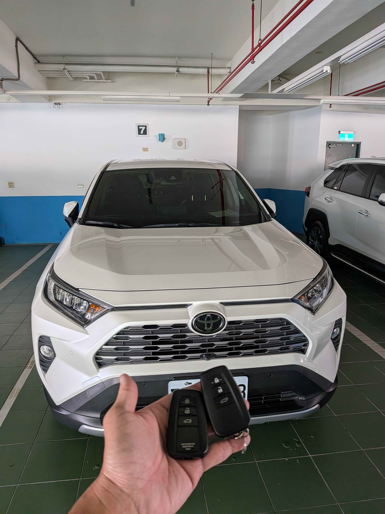

現場實拍：台中豐原 Toyota RAV4 五代智慧鑰匙全丟現場匹配
豐原區 Toyota 緊急救援：免換電腦、當場完工
豐原一位 2021 年式 Toyota RAV4 (五代) 車主因疏忽將最後一把智慧鑰匙遺失。原廠報價除需等待數週外，還需更換昂貴的 ID Code 盒與相關電腦模組。極致核心接到通知後，第一時間攜帶專業豐原行動工作站趕往現場，為車主提供最專業的解決方案。
技術核心：OBDII 數據重構技術
針對五代 RAV4 的高安全防盜機制，技師透過專業加密採集技術，直接連結 OBDII 診斷介面進行數據重構。
- • 免拆儀表： 採先進軟體解碼技術，全程不拆卸任何內裝電腦。
- • 快速匹配： 現場 40 分鐘內完成兩把全新智慧鑰匙的配製。
- • 功能復原： Keyless 免鑰匙進入、按鈕啟動及電動尾門功能全數恢復。
此次救援再次展示了極致核心針對 Toyota 最新一代防盜系統的技術突破。車主無需支付昂貴的拖吊費與零件更換費，在現場即可重新啟動行程。